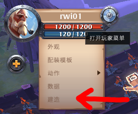
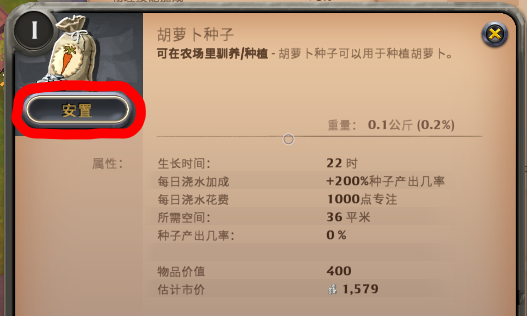

農作物種植
關於農作物的種植、澆水與收益。
農地

農場只能種植作物，藥園只能種植草藥。
而這兩種建築都只能建造在地圖上的棕色地塊上(農地)。
播種
一塊農地建好後可以種植 9 株作物或草藥。
播種方法：

將作物/草藥種子放置在農場/藥園裡即可。
澆水
每一種農作物，從播種到成熟的時間皆為22小時，在此期間內只需澆一次水即可獲得澆水加成。
(剩21小時或只剩10分鐘時澆水都可)
澆水需要消耗專注點，沒有任何專精時一次需要消耗 1,000 專注點，
不過隨著內圈和外圈等級的提升，每次澆水所需的專注點會越來越少。
計算單次澆水所需專注點：
(剩21小時或只剩10分鐘時澆水都可)
澆水需要消耗專注點，沒有任何專精時一次需要消耗 1,000 專注點，
不過隨著內圈和外圈等級的提升，每次澆水所需的專注點會越來越少。
計算單次澆水所需專注點：
澆水一次需要 1000 專注點
手機版：直接站在該株作物上迅速點2下攻擊鍵即可澆水。
澆水加成
澆水僅會增加種子產量。
種子產出率與澆水獲利如下表：
種子產出率與澆水獲利如下表：
| 農作物 | 未澆水 | 有澆水 | 澆水加成 B | 種子價格 p | B*p |
| T1胡蘿蔔 | 0% | 200% | +2 | 2,000 | 4,000 |
| T2豌豆/草藥 | 33.33% | 166.67% | +1.333 | 3,000 | 4,000 |
| T3小麥/草藥 | 60% | 140% | +0.8 | 5,000 | 4,000 |
| T4蕪菁/草藥 | 73.33% | 126.67% | +0.5333 | 7,500 | 4,000 |
| T5白菜/草藥 | 80% | 120% | +0.4 | 10,000 | 4,000 |
| T6土豆/草藥 | 86.67% | 113.33% | +0.2667 | 15,000 | 4,000 |
| T7玉米/草藥 | 91.11% | 108.89% | +0.1778 | 22,500 | 4,000 |
| T8南瓜/草藥 | 93.33% | 106.67% | +0.1333 | 30,000 | 4,000 |
澆水加成 B 可以理解為，澆水後每株作物平均會多產出 n 個種子。
種子產出率如果為 120% 代表： 100% 產出 1 個種子，有 20% 的機率額外再產出 1 個種子。
商城的種子價格可能會比農業商人略為便宜。(兩者選便宜的買)
由上表可知，無論你種什麼東西，每株農作物澆水後的種子平均獲利皆為 4,000。
種子產出率如果為 120% 代表： 100% 產出 1 個種子，有 20% 的機率額外再產出 1 個種子。
商城的種子價格可能會比農業商人略為便宜。(兩者選便宜的買)
由上表可知，無論你種什麼東西，每株農作物澆水後的種子平均獲利皆為 4,000。
收成
每一種農作物採收後的產物數量和種植聲望皆相同。
每一株農作物採收後可獲得：
每一株農作物採收後可獲得：
| 產物 | 無尊享會員 | 有尊享會員 |
| 農作物 | 3~6 | 6~12 (2倍) |
| 種子 | 0~2 | 0~2 (不影響) |
| 蚯蚓 | 0~1 | 0~2 (2倍) |
| 種植聲望 | 100 | 150 (1.5倍) |
手機版：直接站在該株作物上，迅速點2下攻擊鍵即可直接採收。
非常推薦使用手機種田，採收比電腦快速方便。
非常推薦使用手機種田，採收比電腦快速方便。
收益
如果沒會員，種田很可能會虧錢。
種田的收益其實與"種哪種農作物"無關，因為無論種植哪一種，種子成本皆相同。
要達到最高收益，就挑市場上最高價的來種。
注意：以下收益計算為"平均"收益，實際收益可能會因運氣成分而有誤差。
種田收益計算：(有尊享會員下、不含澆水/蚯蚓的收益)
種田的收益其實與"種哪種農作物"無關，因為無論種植哪一種，種子成本皆相同。
要達到最高收益，就挑市場上最高價的來種。
注意：以下收益計算為"平均"收益，實際收益可能會因運氣成分而有誤差。
種田收益計算：(有尊享會員下、不含澆水/蚯蚓的收益)
每日收益 0
澆水收益計算：(買會員來澆水、不含挑戰者獎勵收益)
每日收益 0
編輯紀錄
作者: runnywolf
最後編輯日期: 2022/07/30